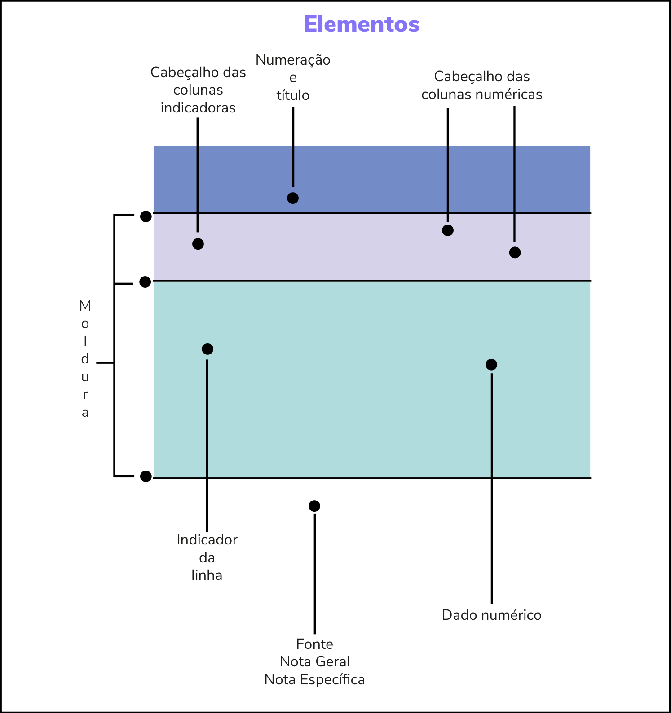

Módulo 1 | Aula 1
Análise exploratória e descritiva
Tabelas
Mas como tratamos esses dados? De três maneiras, principalmente. A primeira é por meio de tabelas, em segundo, com a construção de gráficos e não menos importante o cálculo de medidas-resumo. Essa última veremos na aula subsequente.
Começando pelas tabelas, a gente não faz tabela como a gente quer. Existem normas e essas foram publicadas em 1991 pelo Instituto Brasileiro de Geografia e Estatística (IBGE), sob o título “Normas de apresentação tabular” (disponível em: http://biblioteca.ibge.gov.br/visualizacao/monografias/GEBIS%20-%20RJ/normastabular.pdf).
Basicamente, uma tabela deve ser simples, clara e objetiva. Ou seja, ela deve ser autoexplicativa! Quando vemos uma tabela devemos, por si só, interpretá-la sem auxílio de um texto com a explicação.
A seguir estão os elementos que compõem uma tabela, como apresentado na figura 1:
- Corpo: conjunto das informações que aparecem no sentido vertical e horizontal.
- Coluna indicadora: divisão em sentido vertical onde aparece a designação da natureza do conteúdo da linha.
- Cabeçalho: indica a natureza do conteúdo de cada coluna.
- Célula: são divisões que aparecem no corpo da tabela.
- Rodapé.
Fonte: é a indicação da entidade responsável pela elaboração da tabela. Deve ser colocada no rodapé, no final da tabela.
Notas: também devem ser colocadas no rodapé, depois da fonte, de forma sintética.
Figura 1: Elementos de uma tabela.

Fonte: Disponível em https://www.foa.unesp.br/#!/instituicao/biblioteca/normas-tecnicas/normas-de-apresentacao-de-tabelas/.
Pelas normas de apresentação tabular:
- As tabelas devem ser numeradas, quando temos várias em um texto.
- Nenhuma célula da tabela deve ficar em branco, apresentando, sempre, um número ou símbolo. Entende-se por célula qualquer divisão que aparece na tabela.
- As tabelas devem ser fechadas no alto e embaixo com linhas horizontais. Muito importante: não feche as tabelas nas laterais! Porém, as linhas verticais internas são opcionais.
- Uniformize o número de casas decimais. Ora com uma casa ora com duas ora com nenhuma não é bom. Escolha, por exemplo, uma casa decimal e aplique em todos os valores com decimais.
- Os totais e subtotais devem ser destacados.
- Os títulos devem responder às seguintes perguntas: O quê? Quem? Onde? Quando?
- Incluir a fonte dos dados no rodapé da tabela.
- No rodapé devem conter a fonte e, em sequência, se necessário, as notas, que são observações sucintas da tabela.
Para construir uma tabela devemos considerar a frequência com que cada observação ocorre. Então, frequência absoluta é o número observado em cada classe ou categoria. Frequência relativa é a divisão entre a frequência absoluta da classe e a frequência absoluta total. Geralmente, usamos o símbolo % no cabeçalho da tabela. A frequência acumulada, que pode ser a absoluta ou a relativa (em percentual), é obtida por meio da soma da frequência daquela classe mais as frequências de todas as classes anteriores. Usualmente, a frequência acumulada é apresentada nas saídas dos softwares de estatística.
Chama atenção que no cálculo do percentual precisa, sempre, fechar 100%! Caso não aconteça orienta-se usar as regras de arredondamento, podendo a frequência de maior valor ser utilizada para esse fim.
A partir desse momento, vamos usar um pequeno conjunto de dados hipotéticos com 40 observações gerado por meio de ferramenta de inteligência artificial (Google Gemini). O conjunto de dados contém informações sobre controle do Diabetes tipo 2 em pacientes acompanhados por uma clínica médica. Variáveis como glicemia (controlada / não controlada); adesão à dieta (baixa / moderada / alta); prática de exercício físico (rara / moderada / diária); Idade do paciente (em anos); número de meses de descoberta do diabetes e IMC (Índice de Massa Corporal) foram abordadas.
Como exemplo de variável qualitativa nominal (dicotômica), apresenta-se na tabela 1 o resultado da glicemia (controlada ou não) dos pacientes de uma clínica médica. É nítido o predomínio de pacientes com a glicemia não controlada (72,5%).
Tabela 1: Glicemia de pacientes acompanhados em uma clínica médica.
| Glicemia | Frequência | Percentual | Frequência acumulada | Percentual acumulado |
|---|---|---|---|---|
| Controlada | 11 | 27,5 | 11 | 27,5 |
| Não Controlada | 29 | 72,5 | 40 | 100 |
| Total | 40 | 100,0 | - | - |
Fonte: Dados fictícios gerados por Inteligência Artificial (Google Gemini), em julho de 2026.
Considerando uma variável qualitativa com mais de duas categorias (multinomial) observa-se a tabela 2, com a variável exercício físico (se pratica raramente, moderado ou diariamente). A maioria pratica exercício físico de forma rara (55,0%). Nesse caso, é um exemplo de uma variável qualitativa ordinal. Recomenda-se apresentar as categorias na ordem natural já estabelecida.
Tabela 2: Prática de exercício físico dos pacientes de uma clínica médica.
| Prática exercício físico | Frequência | Percentual | Frequência acumulada | Percentual acumulado |
|---|---|---|---|---|
| Rara | 22 | 55,0 | 22 | 55,0 |
| Moderada | 12 | 30,0 | 34 | 85,0 |
| Diária | 6 | 15,0 | 40 | 100,0 |
| Total | 40 | 100,0 | - | - |
Fonte: Dados fictícios gerados por Inteligência Artificial (Google Gemini), em julho de 2026.
No caso das variáveis quantitativas discretas é possível apresentar uma tabela (desde que não haja muita variação entre os dados.
Na tabela 3 estão os dados da variável há quantos meses o paciente descobriu o diabetes. Aqui, particularmente observa-se uma situação muito comum, que é a ausência de dados. Como lidar? Bem, quando estamos nessa fase exploratória dos dados recomenda-se considerar todos os dados justamente para identificar a quantidade (percentual) de dados faltantes. Se for muito elevado o ideal é não utilizar essa variável no estudo. Alguns softwares de estatística calculam o percentual sem esses dados, outros apresentam os dois percentuais (com e sem os dados faltantes).
Tabela 3: Número de meses de descoberta do diabetes dos pacientes da clínica médica.
| Meses | Frequência | Percentual |
|---|---|---|
| 1 | 7 | 17,5 |
| 2 | 7 | 17,5 |
| 3 | 5 | 12,5 |
| 4 | 7 | 17,5 |
| 5 | 6 | 15,0 |
| 6 | 6 | 15,0 |
| Sem informação | 2 | 5,0 |
| Total | 40 | 100,0 |
Fonte: Dados fictícios gerados por Inteligência Artificial (Google Gemini), em julho de 2026.
No caso em questão, o percentual de dados faltantes (5,0) é muito pequeno.
Quando as variáveis são quantitativas contínuas a apresentação tabular talvez não seja a melhor forma por conter muitos valores. Nesse caso, a ideia de sumarização fica perdida, pois a tabela de tão longa por conta da variabilidade pode apresentar páginas e páginas de dados, o que em vez de ajudar acaba prejudicando a análise. Para resolver esse problema, sugere-se transformar a variável quantitativa contínua em uma variável qualitativa ordinal. É verdade que podemos “perder” informação, mas é a maneira mais simples de apresentação tabular. Então, surge a pergunta, como devo categorizar a variável? Existe um cálculo específico, porém podemos basear na literatura para definir as classes de acordo com o objeto a ser estudado.
Voltando para os nossos dados, uma tabela com a frequência da variável índice de massa corpórea (IMC) não nos diz muita coisa, pois os valores não se repetem, tendo, então, uma tabela com 40 linhas (número de observações). Veja na tabela 4.
Tabela 4: Índice de Massa Corpórea (IMC) dos pacientes da clínica médica.
| IMC | Frequência | Percentual |
|---|---|---|
| 19,82 | 1 | 2,50 |
| 20,45 | 1 | 2,50 |
| 21,95 | 1 | 2,50 |
| 22,74 | 1 | 2,50 |
| 23,44 | 1 | 2,50 |
| 23,88 | 1 | 2,50 |
| 24,12 | 1 | 2,50 |
| 24,89 | 1 | 2,50 |
| 25,11 | 1 | 2,50 |
| 25,63 | 1 | 2,50 |
| 26,08 | 1 | 2,50 |
| 26,37 | 1 | 2,50 |
| 27,58 | 1 | 2,50 |
| 27,94 | 1 | 2,50 |
| 28,19 | 1 | 2,50 |
| 28,41 | 1 | 2,50 |
| 28,94 | 1 | 2,50 |
| 29,18 | 1 | 2,50 |
| 29,85 | 1 | 2,50 |
| 29,93 | 1 | 2,50 |
| 30,05 | 1 | 2,50 |
| 30,51 | 1 | 2,50 |
| 31,25 | 1 | 2,50 |
| 31,45 | 1 | 2,50 |
| 31,74 | 1 | 2,50 |
| 32,16 | 1 | 2,50 |
| 32,61 | 1 | 2,50 |
| 33,08 | 1 | 2,50 |
| 33,25 | 1 | 2,50 |
| 33,76 | 1 | 2,50 |
| 34,02 | 1 | 2,50 |
| 34,67 | 1 | 2,50 |
| 35,41 | 1 | 2,50 |
| 35,62 | 1 | 2,50 |
| 36,22 | 1 | 2,50 |
| 36,89 | 1 | 2,50 |
| 37,54 | 1 | 2,50 |
| 38,91 | 1 | 2,50 |
| 39,45 | 1 | 2,50 |
| 40,13 | 1 | 2,50 |
| Total | 40 | 100,0 |
Fonte: Dados fictícios gerados por Inteligência Artificial (Google Gemini), em julho de 2026.
Podemos, então, categorizar essa variável. De acordo com Nuttall (2015), o IMC é dividido em seis categorias: abaixo do peso (IMC < 20,0); peso normal (20,0 <= IMC <= 24,9); sobrepeso (IMC 25,0 <= IMC <= 29,9); obesidade grau I (30,0 <= IMC <= 34,9); obesidade grau II (35,0 <= IMC <= 39,9) e obesidade grau III (IMC >= 40,0). Assim, os dados de IMC para os pacientes da clínica médica do nosso exemplo estão apresentados na tabela 5. Observa-se que 60,0% dos pacientes apresentam sobrepeso ou obesidade de grau I.
Tabela 5: Índice de Massa Corpórea (IMC) dos pacientes da clínica médica.
| Índice de Massa Corpórea (IMC) | Frequência | Percentual |
|---|---|---|
| Abaixo do peso | 1 | 2,5 |
| Peso normal | 7 | 17,5 |
| Sobrepeso | 12 | 30,0 |
| Obesidade grau I | 12 | 30,0 |
| Obesidade grau II | 7 | 17,5 |
| Obesidade grau III | 1 | 2,5 |
| Total | 40 | 100,0 |
Fonte: Dados fictícios gerados por Inteligência Artificial (Google Gemini), em julho de 2026.